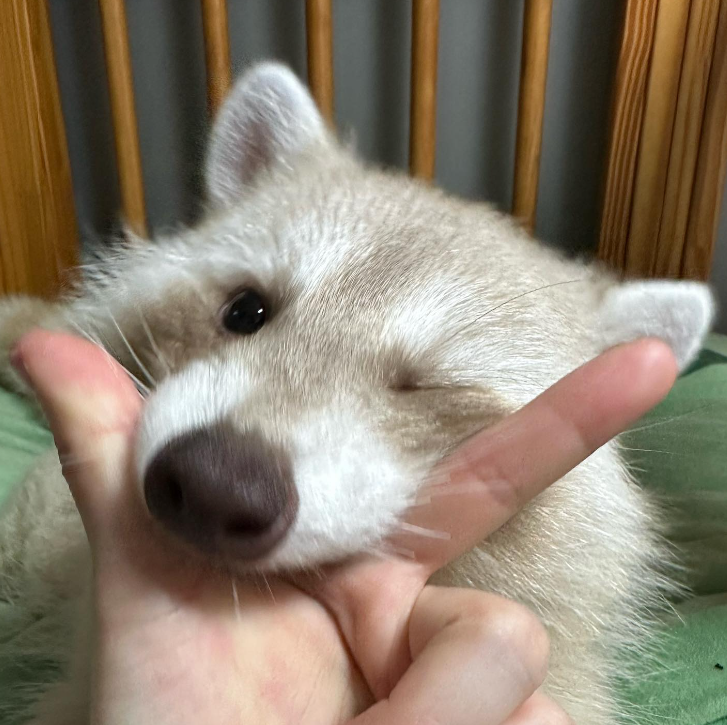
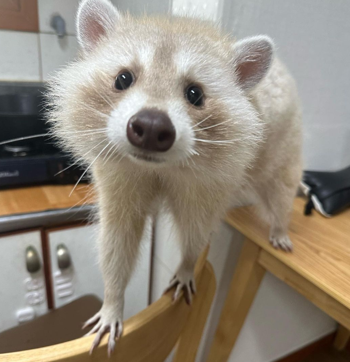
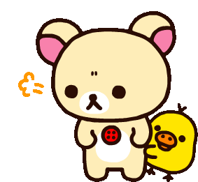

-
Ice cream
-
The color purple
- clearly because my website
-
Animals
- Racoons
- Cats
- Dogs
- ...and basically all other animals
-
Rilakuma, Sanrio and Miffy themed stuff
- I like to buy cute room decor and collect plushies



Visit garlic the racoons instagram page here!